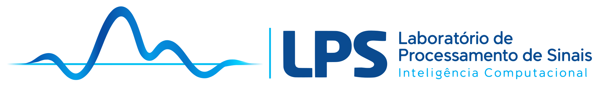
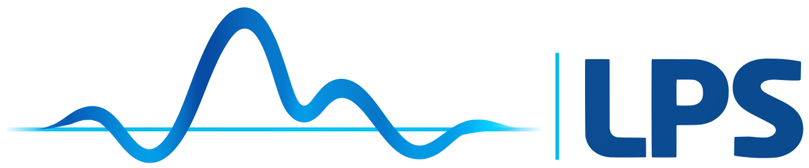

Texto de leitura em --color-text sobre --color-canvas, com ligação em --color-action.
Texto secundário em --color-text-muted, nunca para instruções essenciais.
Fixture: desktop masthead — full artwork 280px on surface

Laboratório de Processamento de SinaisFixture: mobile masthead — compact artwork 32px on surface

Fixture: anchor band — text wordmark only
Fixture: surrounding labels and control boundary
Texto de leitura em --color-text sobre --color-canvas, com ligação em --color-action.
Texto secundário em --color-text-muted, nunca para instruções essenciais.